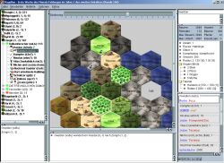

Magellan is a full-featured client tool for the play-by-e-mail game Eressea. It displays a map of your part of the Eressea world, supports you in writing orders, performs many complex calculations for you and is available completely in English.
Magellan is only one among many other client programs for Eressea and is in on way related to the developers of Eressea. To relieve them of unnecessary work please contact the Magellan community in case you have any questions or problems.
Magellan is built using the platform independent Java technology and therefore runs on MS Windows, Linux, MacOS X and some other operating systems. However, it requires a rather powerful machine, especially when your faction grows bigger. The minimum system requirements are a 200 MHz processor and 64 MB RAM, but 450 MHz and 128 MB RAM are recommended. For Magellan Java 1.3 or newer is required.
Java is a platform independent programming system. Actually, you do not really have to worry about that. After installing Java on your computer once, all you need is to download Magellan. Consisting only of a single file, you can run it like any other program from then on.
Well, for one thing, Magellan was able to achieve Enno's Seal of Excellence.
According to the Eressea poll (Dec-01) Magellan seems to be by far the most popular tool among the Eressea players.
Magellan is an open source project with a bunch of developers ensuring that adaptations to the latest Eressea features are always available quickly. Also, the users form an integral part of the Magellan development process by bringing in enhancement requests and new ideas.
{kind=link}